왜 방탄복을 flak jacket이라고 부를까?
게시: 2021-03-18T06:30:25+09:00
원래 방탄복은 소총탄을 막기 위한 것이 아니라 파편을 막기 위한 것입니다. 5.56mm 소총탄에는 그냥 뚫려요. 그래서 방탄복을 영어로는 bullet-proof jacket이라고 부르지 않고 그냥 flak jacket이라고 합니다. 우리 말로도 정확하게 하자면 방탄복이 아니라 방편복이라고 해야겠지요. 그런데 생각해보면 파편은 영어로 fragment 또는 shrapnel입니다. 이걸 줄여 부르면 frag jacket이라고 불러야 할 것 같은데 왜 flak jacket이라고 부를까요? 애초에 flak이 뭐지요? Flak은 항공기를 쏘는 고사포를 뜻하는 단어입니다. 사실 이건 영어가 아니라 독일어에요. 원래는 제대로 된 독일어로는 fliegerabwehrkanone(대충 플리거앞비어커노너)라고 합니다. 독일어는 이런저런 뜻을 가진 단어들을 그대로 합해서 새단어를 만드는 경향이 있지요. 이것도 flieger (flyer, 나는 것) + abwehr (defence, 방어) + kanone (cannon, 대포)의 세 단어가 합쳐진 것입니다. 그런데 독일 애들도 이렇게 긴 단어를 발음하기가 힘들었는지 그냥 flak이라고 불렀습니다. 그리고 제2차세계대전에서 그런 고사포를 가장 직접적으로 상대해야 했던 영국 공군 폭격기 승무원들도 고사포를 flak이라고 불렀고요. 그러다보니 영어로도 원래는 anti-aircraft artillery라는 긴 이름이었던 고사포를 그냥 flak이라고 부르게 되었습니다. 영어로도 모든 것을 머릿글자로 줄여부릅니다만, anti-aircraft artillery를 AAA라고 부르자니 좀 그렇쟎아요? 그래서 입에 잘 달라붙는 flak이 더 대세 단어가 되었습니다.
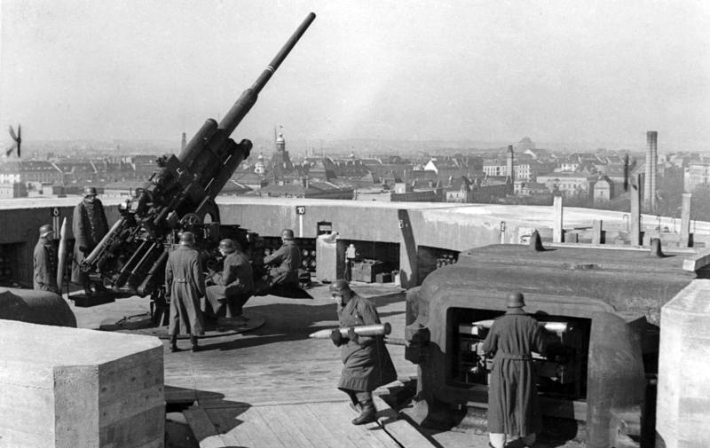
(고사포는 아주 높은 곳까지 포탄을 쏘아올려야 하므로 의외로 매우 큰 대포입니다. 롬멜이 88mm 고사포를 대전차용으로 사용해서 많은 전과를 세웠지요.)
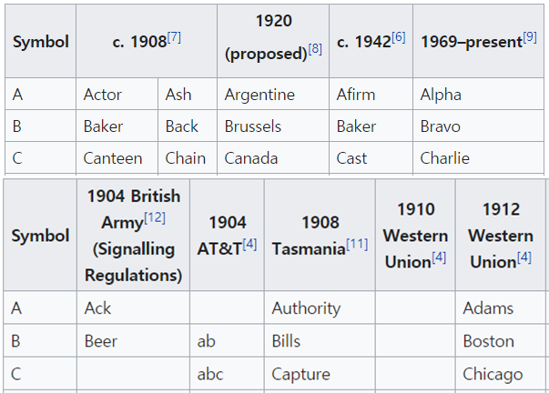
(독일어 말고 순수 영어를 고집하는 사람들은 고사포를 ack-ack이라고도 부릅니다. 이는 A를 무전에서 phonetic alphabet으로 부를때 ack이라고 불렀던 것에서 비롯된 것입니다. AA를 에이-에이라고 부르면 잡음이 심한 무전에서 잘못 알아듣기 쉬우니까 명확하게 ack-ack이라고 부른 것이지요. 현대 미군에서는 AA를 굳이 phonetic alphabet으로 부른다면 alpha-alpha라고 불러야 하는데, 아무래도 입에 안 붙지요?) 제2차세계대전 당시에 영국 공군 및 미육군 폭격기 승무원들은 높은 사상률을 냈습니다. 독일 공군 전투기에도 많이 격추되었지만 무엇보다도 그들을 가장 괴롭힌 것은 고사포였습니다. 바우어(Bower)라는 이름의 어떤 B-17 기총수의 증언을 보시지요. "고사포(flak)가 세상 최악의 물건이었지요. 우린 비행에서 단 한 번도 그것들을 만나지 않은 적이 없었어요. 그게 시작되면 볼 수 있는 거라고는 시커먼 연기 밖에 없었어요. 물론 그 검은 연기는 퍼진 뒤의 물건이었고, 진짜 우리를 위협하는 것은 중간에 붉은 점으로 보이는 것이었어요. 거기가 폭발이 일어나는 곳이었거든요. 붉은 색이 보였다가 곧 화약으로 바뀌지요. 그 앞에 대공포탄이 있다는 것을 알면서도 그 한복판을 뚫고 날아야 하니까 겁이 나는 거에요. 게다가 독일놈들도 우리가 그냥 똑바로 날아야 한다는 것을 잘 알고 있었지요. 걔들은 우리가 속도를 변경하지도, 고도를 바꾸지도 않는다는 것을 알고 있었기 때문에 정확한 고도의 정확한 위치로 미리 고사포탄을 쏘아올렸어요. 그렇게 걔들이 깔아놓은 고사포탄 밭 속을 우리는 통과해야 했지요. 그걸 피해 돌아설 방법은 없었어요. 우린 절대 회피 동작을 취하지 않았어요. 우리가 일단 투하 코스에 들어서면 조종사는 폭격수에게 비행기 조종을 넘기거든요. 제8 공군 역사상 그 누구도 고사포화 때문에 폭격 임무에서 물러선 사람은 없었지요. 제가 경험한 바로는, 적 전투기보다 고사포가 더 지독했어요."
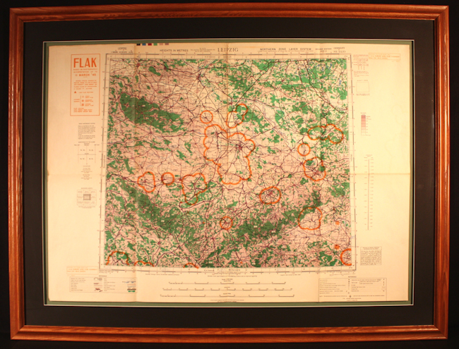
(영국 공군 항법사가 지니고 탑승한 1945년 Flak 지도입니다. 즉, 독일 대공포대가 지키고 있는 구역을 표시한 것입니다. 지도 중앙 부분이 라이프치히이고, 오른쪽은 드레스덴입니다.)
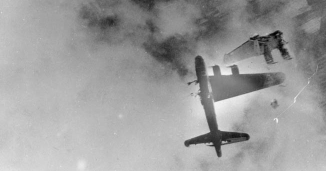
(고사포에 맞아 격추되는 B-17의 사진입니다. 이 B-17은 1945년 4월 독일 Stendal이라는 도시 상공에서 피격되었습니다. 놀랍게도 2명은 탈출하여 생존했고, 나머지 8명은 전사했습니다.)
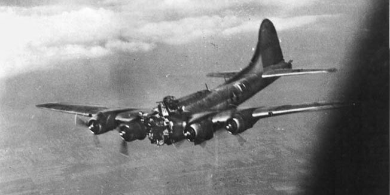
(이 B-17은 1944년 7월 헝가리 국경 부근에서 피격되었습니다. 날아간 코 부분에 타고 있던 2명의 승무원은 즉사했지만, 조종사를 포함한 나머지는 모두 탈출에 성공했습니다. 물론 모두 포로로 잡혔지요.)
전쟁 초기인 1940년에 독일 주요 공업지대에는 791문의 대구경 고사포와 686문의 소구경 고사포가 배치되어 있었습니다. 그러나 연합군이 공세로 나오면서 자연스럽게 그 수가 크게 늘어, 1944년에는 대구경 고사포가 무려 2,655문, 소구경은 1,612문이 배치되었습니다. 이런 고사포탄에 직격당해서 폭격기가 격추되는 경우도 있었습니다만, 당연히 그런 경우는 드물었습니다. 독일 공군 병참감이던 자이들(Hans-Georg von Seidel)의 조사에 따르면, 연합군 폭격기 1대를 떨어뜨리기 위해서 평균 3,343발의 대구경 고사포탄과 4,940발의 소구경 고사포탄이 소모되었습니다. 전후 미군의 연구 결과에 따르면 독일군이 좀더 진보된 근접 신관을 개발했더라면 연합군 폭격기의 손실은 약 3.4배 더 늘었을 거라고 합니다. 이렇게 과도한 대공포 병력의 유지와 헛되이 소모되는 포탄은 독일군의 전쟁 능력을 크게 떨어뜨리는 역할도 했지만, 정작 영국 및 미국 폭격기 승무원들에게는 공포 그 자체였습니다. 무엇보다 공중폭발하는 포탄의 파편에 의한 피해가 심각했습니다. 폭격기가 그런 파편에 의해 격추되는 경우도 많았지만 많은 승무원들이 그런 파편에 중상을 입거나 목숨을 잃었습니다. 영국은 약 22,000대의 폭격기와 79,281명의 승무원을 잃었고, 미국은 약 18,000대의 항공기와 79,265명의 승무원을 잃었습니다. 그래서 만들어진 것이 방탄복, 즉 flak jacket이었습니다. 방탄복이라는 것은 고대 시절의 갑옷부터 있었던 것이고 미국 남북전쟁 시절에도 있었다고 합니다만, 근대적인 방탄복이 처음 만들어진 것은 육군 보병을 위한 것이 아니라 바로 영국 공군, 그 중에서도 독일 상공에서 폭격 임무를 수행하던 랭카스터 폭격기의 승무원들을 독일 고사포 파편으로부터 보호하기 위한 것이었습니다. Wilkinson Sword company라는 곳에서 개발했는데, 이건 정사각형 모양의 작은 망간 합금강 조각을 촘촘히 짜맞추어 천 속에 넣은 물건이었습니다.
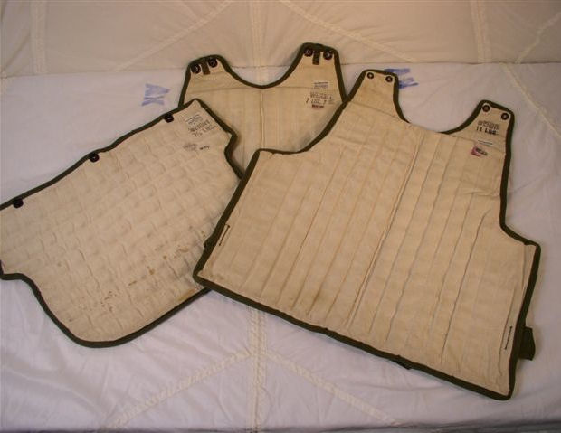 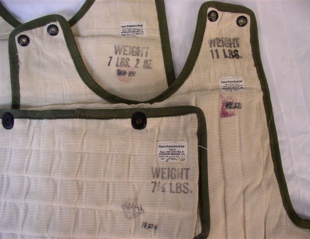
(총 3조각으로 이루어진 flak jacket입니다. 저 3조각을 모두 합하면 무게가 총 25파운드 10온스, 즉 11.6kg 정도였으니 상당히 무겁습니다. 이 방탄복은 군용 낙하산을 만들던 Fashion Frocks, Inc.라는 회사 제품입니다.)
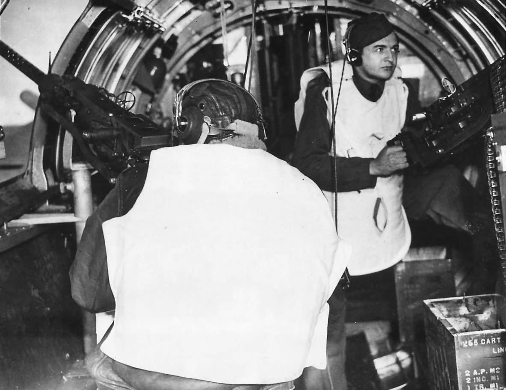 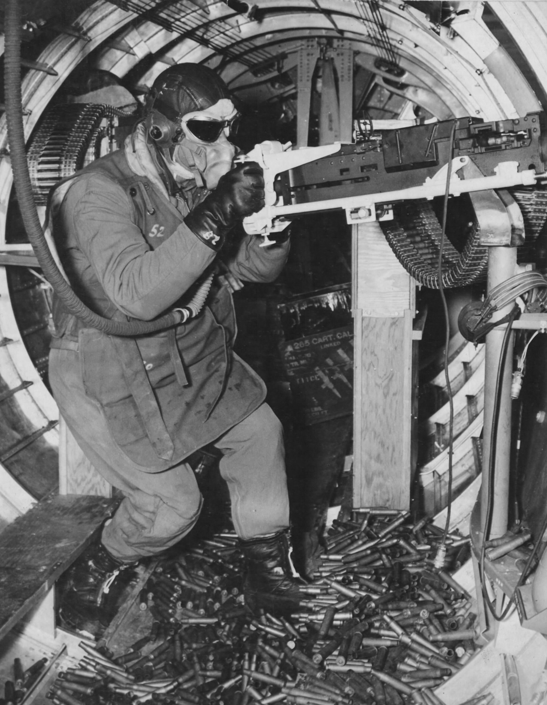
하지만 여기에는 또 희극 같은 비극이 따릅니다. 그렇게 만든 방탄복을 랭카스터 폭격기 승무원들에게 입혀 놓으니 문제가 생겼습니다. 랭카스터 폭격기는 기체 내부가 좁은 편이었기 때문에, 기총수 등이 부피가 크고 거추장스러운 방탄복을 입고는 제대로 움직이기가 어려웠던 것입니다. 결국 영국 공군은 애써 만든 9,600벌의 방탄복을 미육군 항공대에게 양도했고, B-17 폭격기 승무원들은 이걸 잘 활용했습니다. 이건 몇 안되는 reverse lend-lease, 즉 영국이 미국에게 역으로 물자를 제공한 사례 중 하나라고 합니다. 여기서 효과를 본 미군은 이런 방탄복을 미해군 항공모함의 승조원들에게도 지급했습니다.
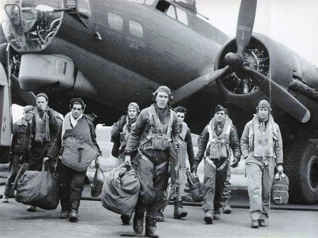
(그래서 결국 방탄복을 입은 랭카스터 승무원들의 사진은 별로 없습니다. 이건 B-17 승무원들의 사진인데, 왼쪽에서 무거운 가방을 든 사람의 어깨에 걸쳐진 것이 방탄복입니다.)
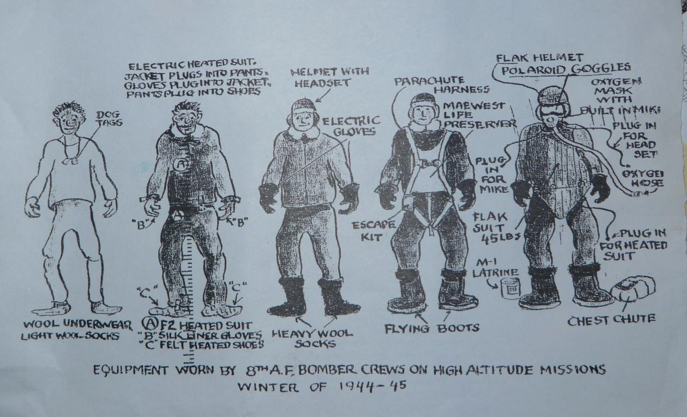
(폭격기 승무원들이 입어야 했던 복장입니다. 이 그림에서는 방탄복이 45파운드, 즉 무려 20kg이라고 나오네요. 저렇게 두껍고 무겁게 입으면 과연 움직일 수가 있을지... 게다가 낙하산은 방탄복 아래에 입는 모양이니, 탈출하려면 먼저 저 방탄복을 벗어야 하는군요. 과연 뱅글벵글 돌면서 추락하는 좁은 폭격기에서 저런 방탄복을 재빨리 벗고 탈출하는 것이 가능할까 모르겠습니다.)
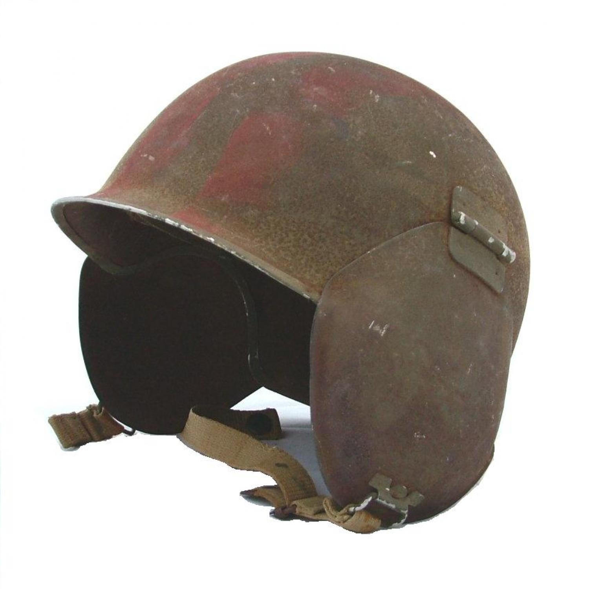
(이건 M3 flak helmet, 즉 폭격기 승무원용 방탄 헬멧입니다. 일반 보병들이 쓰는 강철제 M1 헬멧을 개조한 것으로서, 폭격기에서 사용해야 하는 헤드폰을 위해 귀 부분을 잘라내고 경첩이를 달았습니다. 폭격기 승무원을 위한 이 헬멧의 특징 중 하나는 flocked finish, 즉 마치 섬유 부스러기 같은 것으로 표면처리를 했다는 것입니다. 이는 고공에서는 기온이 영하로 내려가기 때문에, 잘못 해서 승무원의 손이나 얼굴 등에 이 헬멧이 닿았다가 맨살에 헬멧이 얼어서 달라붙는 일을 방지하기 위함이었습니다. 흔들림이 심한 폭격기 내에서 몇몇 승무원은 이 헬멧에 구토를 했는데, 고공에서는 얼어붙었기 때문에 괜찮았지만 무사히 돌아와 착륙할 때 즈음에는 얼었던 토사물이 녹아서 악취를 풍겼다고 합니다.) Source : evanflys.com/jack_burke
en.wikipedia.org/wiki/Defence_of_the_Reich
www.303rdbg.com/uniforms-gear6.html
warfarehistorynetwork.com/2018/12/10/flak-was-our-worst-enemy-wilbur-bowers-air-war-over-europe/